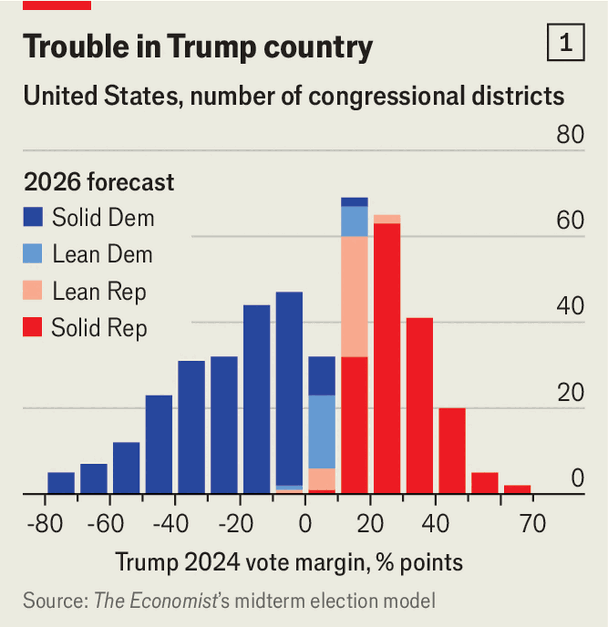
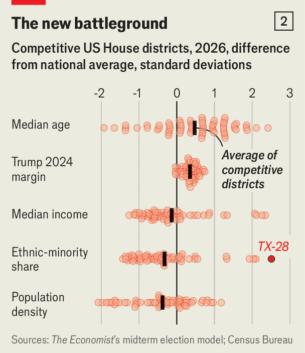

When gerrymandering meets a blue wave
The unexpected consequences of Republicans’ effort to redraw electoral maps
Oct 8th 2026
“The motivation behind this redraw is simple and singular: draw a new map that will bring an additional Republican seat to the North Carolina congressional delegation,” Ralph Hise, a state senator, told fellow legislators in October 2025. If Democrats were to win control of the House of Representatives in this year’s midterm elections, he warned, they would “torpedo President Trump’s agenda”.
Republican lawmakers in six other states did the same, creating maps that favoured their party. Democrats in California responded in kind and a court struck down a previous Republican gerrymander in Utah. On the face of it, Republicans won the redistricting war: our average forecast, based on a probabilistic model, is that the new boundaries will give the party a net gain of 6.5 seats relative to the old maps. The upshot is that Democrats now need to win the national popular vote for the House by four percentage points, instead of two (see chart 1), to take control of the chamber.

Our forecast estimates that Democrats will win by around nine points—easily offsetting the effect of redistricting. But the combination of new maps and the president’s unpopularity has had unexpected consequences, too, expanding the electoral battlefield, shifting the focus towards different sets of voters and changing the nature of the Democratic majority that we expect in the House.
The effects are clearest in Texas, where the fight over redistricting began last summer. At Donald Trump’s behest, state legislators drew a map that created five districts across territory that favoured the president by at least ten points in the 2024 election. But with Mr Trump’s popularity having fallen sharply—not least among Hispanic voters—we estimate that redistricting is now worth an average of just three seats to Republicans, rather than the five they sought. Democratic candidates are now favoured to win in two of the six majority-Hispanic, Trump-voting districts carved out by Republicans in south Texas, and have a better than one-in-three chance in three more.
Elsewhere, the trend is similar. In North Carolina’s 1st district—which was redrawn by Mr Hise and his colleagues—we forecast that the Democratic incumbent, Don Davis, has a six-in-ten chance of winning, even though his new district favoured Mr Trump by almost 12 percentage points. In Florida’s 9th district Darren Soto, a Democrat, has a one-in-two chance of holding his seat, though the boundaries were redrawn to encompass an area that favoured Mr Trump by 18 points.
As Democrats make inroads in districts that voted decisively for Mr Trump, the House as a whole is becoming more competitive. The number of districts where both candidates have a better than 10% chance of winning has risen from 51 in early March to 61 in our latest forecast. This is reflected in how the parties are campaigning. Punchbowl News reported recently that Republican- and Democratic-aligned groups have reserved significant amounts of advertising in 16 districts won by Mr Trump by ten points or more.
This broader battleground also shifts the focus of the election towards a different type of race. The 61 competitive districts favoured Mr Trump by 11 points on average. They also tend to be older, poorer, whiter and more rural than the country as a whole (see chart 2). While Democrats strive to keep the conversation focused on pocketbook problems such as petrol prices and tariffs, Republicans are reminding voters in these districts that their views align more closely with Republican positions on immigration, crime and social issues.

That changing electoral geography could have implications for how Democrats run the House. Our forecast has the party winning 239 seats (a commanding 43-seat advantage over Republicans) compared with 235 after the midterms in 2018, during Mr Trump’s first term. It would include an average of 17 Democrats from districts that favoured the president by double digits. That is no guarantee of moderation. But so far in this election, much attention has gone to left-wing candidates who could complicate Hakeem Jeffries’s task as the presumptive speaker. If our forecast proves accurate, Democrats from Trump country could form an influential bloc of their own. ■
Stay on top of American politics with The US in brief, our daily newsletter with fast analysis of the most important political news, and Checks and Balance, a weekly note that examines the state of American democracy and the issues that matter to voters.